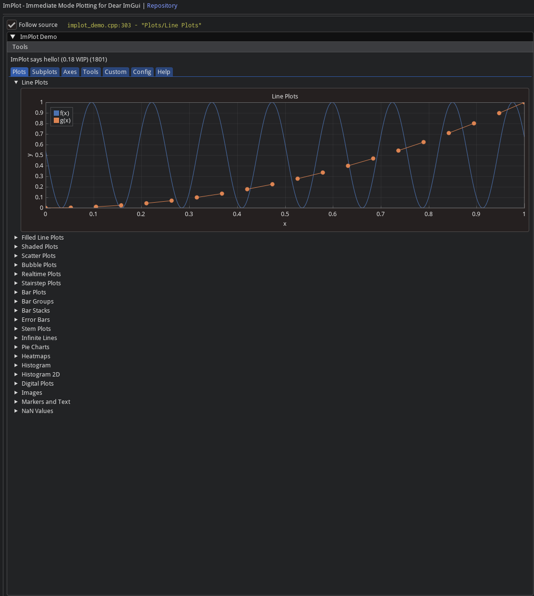
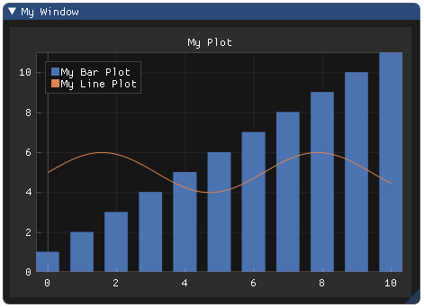

4. Работа с графиками
Установка (подключение к проекту)
В первой главе мы уже добавили репозитрий Implot как сабмодуль в наш проект. Повторим основные шаги для компиляции:
Добавляем в CmakeLists.txt
# ImPlot
add_library(implot STATIC
${THIRD_PARTY_DIR}/implot/implot.cpp
${THIRD_PARTY_DIR}/implot/implot_demo.cpp
${THIRD_PARTY_DIR}/implot/implot_items.cpp
)
target_include_directories(implot PUBLIC ${THIRD_PARTY_DIR}/implot)
target_link_libraries(implot PRIVATE imgui)
target_compile_options(implot PRIVATE -fPIC)
# Линкуем к main
add_executable(main ${SOURCES})
target_link_libraries(main PRIVATE imgui implot ${SDL2_LIBRARIES} ${OPENGL_LIBRARIES} ${GLEW_LIBRARIES} ${SoapySDR_LIBRARIES} mylib fftw3)
DemoWindow, примеры от разработчиков
Онлайн версия Демо - здесь.
Как и в основной библиотеке Dear Imgui, в данном репозитории присутствует исчерпывающий demo-пример:
Реализации функций можно найти в исполняемом файле
implot_demo.cpp;Вызвать в своем проекте можно при помощи функции
ImPlot::ShowDemoWindow()(в основном цикле рендеринга вашей программы);Рекомендуется использовать этот файл в качестве справочного материала для реализации графиков в своей программе.

Использование библиотеки
В первую очередь, необходимо инициализировать контекст ImPlot (аналогично ImGui). Контекст ImPlot должен находится внутри контекста ImGui:
ImGui::CreateContext(); // ImGui контекст
ImPlot::CreateContext(); // Implot контекст
...
ImPlot::DestroyContext();
ImGui::DestroyContext();
Инициализируем и уничтожаем контекст при помощи ImPlot::CreateContext()\ImPlot::DestroyContext(), где бы вы это ни делали для ImGuiContext.
API используется так же, как и любая другая пара ImGui BeginX/EndX. Сначала инициализируем новое окно с графиком при помощи ImPlot::BeginPlot(). Затем рисуем столько элементов, сколько хотим, с помощью предусмотренных функций PlotX (например, PlotLine(), PlotBars(), PlotScatter() и т. д.). Наконец, закрываем текущее окно с графиком ImPlot::EndPlot().
int bar_data[11] = ...;
float x_data[1000] = ...;
float y_data[1000] = ...;
ImGui::Begin("My Window");
if (ImPlot::BeginPlot("My Plot")) {
ImPlot::PlotBars("My Bar Plot", bar_data, 11);
ImPlot::PlotLine("My Line Plot", x_data, y_data, 1000);
...
ImPlot::EndPlot();
}
ImGui::End();
Результат:
